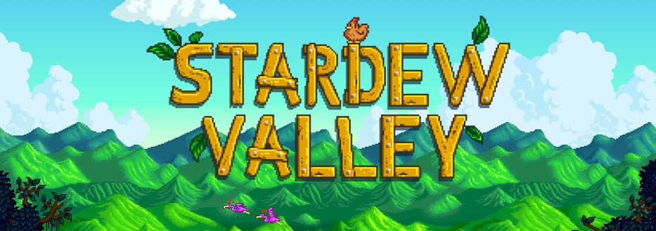
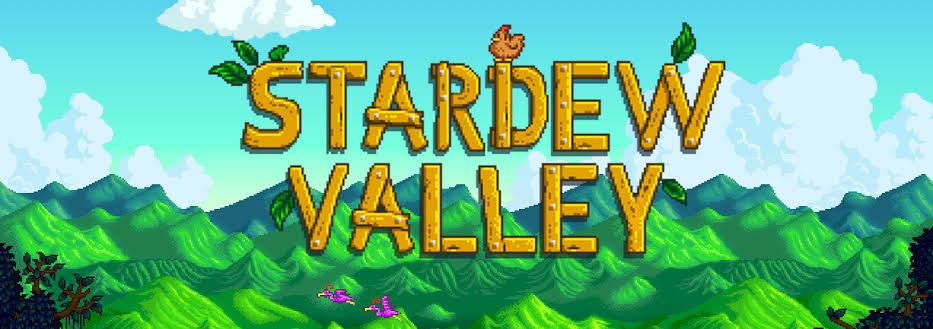

 4.7
4.7Stardew Valley é um RPG de simulação de fazenda que surpreendeu o mundo de jogos e ganhou milhões de fãs. Cuidar de uma fazenda, se aproximar dos moradores de uma cidade pequena e ajudar a renovar o Centro da Comunidade.
Criador: Eric Barone
Ano: 2016
Tags: Simulador Rural, Simulador de vida Real
Tamanho: 500 mb